08 · Report, visual vocabulary, panel, Evidence map
Research
The Research Tool is a wide report on paper with a side panel beside it (Report view or the selected item) and an Evidence map. Code: app/templates/campaign-research/index.html, with shared views in app/templates/shared/clan-fields.html. Design: /tmp/claude-1000/napkin-local/rsidebar/final.md ("One thing at a time, drawn not written"), which follows design/evidence-panel-final.md.
The report body
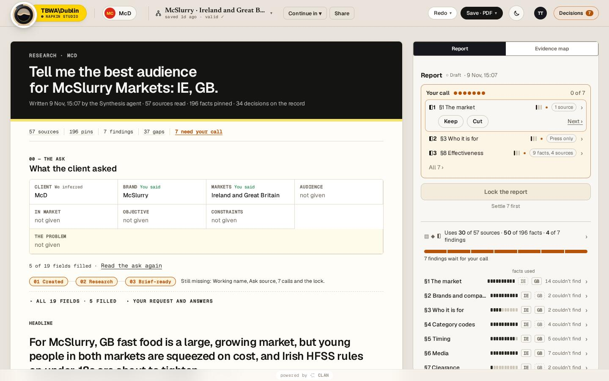
123456- 1The band: ink ground, a 6px highlighter (--rs-hl) inset at the foot, eyebrow "RESEARCH · CLIENT", the question in Geist 600 34px, meta line
- 2Stat row (mono 12px): sources, facts, findings, gaps, "n need your call" in amber
- 300 The ask: a grid of the client's asks, each with its gate (inferred, you said, confirmed)
- 4Report / Evidence map switch
- 5Your call: dots, then one row per open check
- 6Footing and section rows
- 7Find a fact or source
Body rules. The paper stays calm. Every line is a clan-field: hovering gives a highlighter wash (34% --rs-hl) and a 2px ink underline, and selecting deepens it to 62%. Values sit inline as fields. Each sentence carries one quiet source tag. Sections are numbered "01 — MARKET STRUCTURE · IE · GB", each with its finding line and a state tag (FINDING · PROPOSED · NEEDS YOUR CALL), at most one gap, and "Behind this section". Then come Before the brief (Confirm) and Not researched. There are no glyphs or state colours on the sheet apart from the amber call tag.
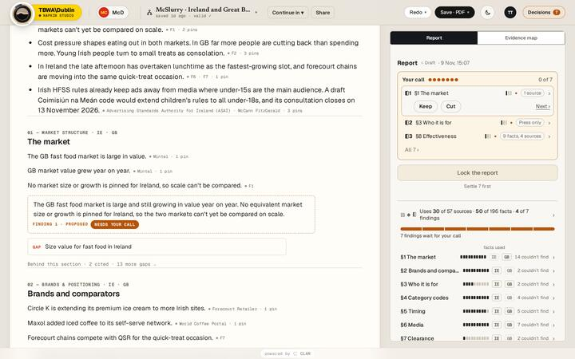
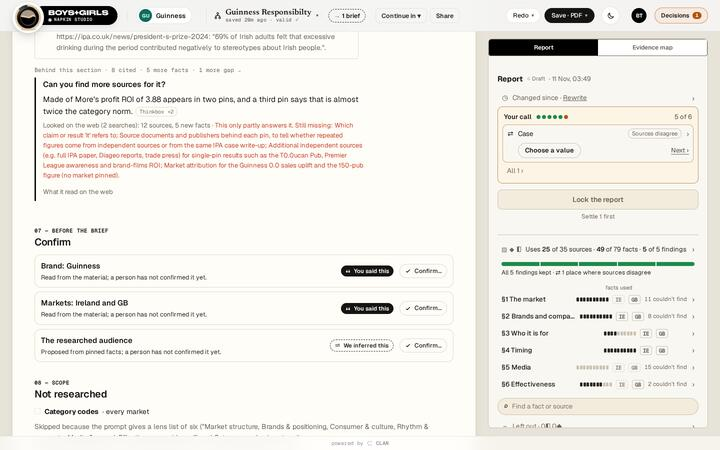
Visual vocabulary
The shape is the kind and never the colour. The state is one colour plus a mark, so it reads in greyscale.
| Glyph | Kind | On the map |
|---|---|---|
| ▤ | Source | a tile with a folded corner, with a corner fill for its tier |
| ◆ | Fact | a rounded chip. A number is set large, and a text fact leads with its name |
| ◗ | Finding | a box with a heavy left edge, holding its number |
| ① Ⓗ | Summary line, headline | a numbered disc |
| § | Section | no box. It groups facts |
| ┄ | Missing | a dashed outline of the kind it stands for |
| ⟲ | History | a row |
| Mark | State | Colour |
|---|---|---|
| ● | Needs you | amber, the only loud colour |
| ○ | Proposed | muted |
| ✓ | Kept / checked | green |
| ⇄ | Sources disagree | red-amber |
| – | Left out | struck through, 40% |
| ◷ | Out of date | muted |
| ⛓ | Source record not copied | muted |
Confidence bars and tiers
confBars(n) (clan-fields.html:1332) draws three bars. The words "Sure / Fairly sure / Thin" appear only in the tooltip and aria-label. Markets are short chips (IE, GB). The Key on the map explains all of it.
Glossary on the surface
The side panel
The panel shows either the Report view or one item. Fixed-height parts come first (crumb, state line, actions), so nothing jumps under the cursor.
Report view (nothing selected)
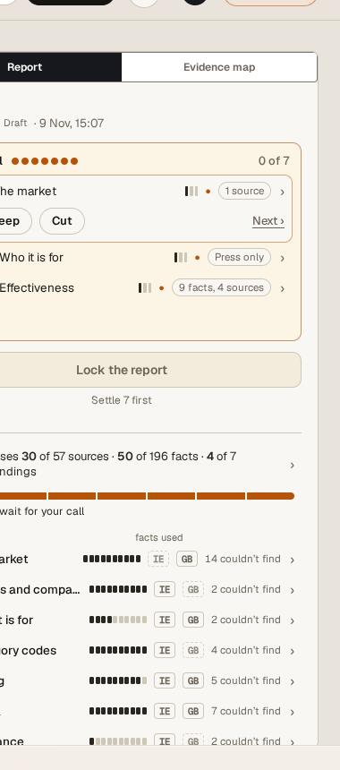
246- 1Report | Evidence map
- 2Header: "Report ○ Draft · 9 Nov, 15:07"
- 3Your call: a dot per check, "0 of 7", rows by glyph+number, section, bars and reason, with Keep / Cut on the first and Next ›
- 4Lock the report: the one primary, disabled with "Settle 7 first"
- 5Footing: "Uses 30 of 57 sources · 50 of 196 facts · 4 of 7 findings" and a stacked bar by finding
- 6Section rows: pip bar of used against found, market chips, "n couldn't find"
Selected item: one skeleton for every kind
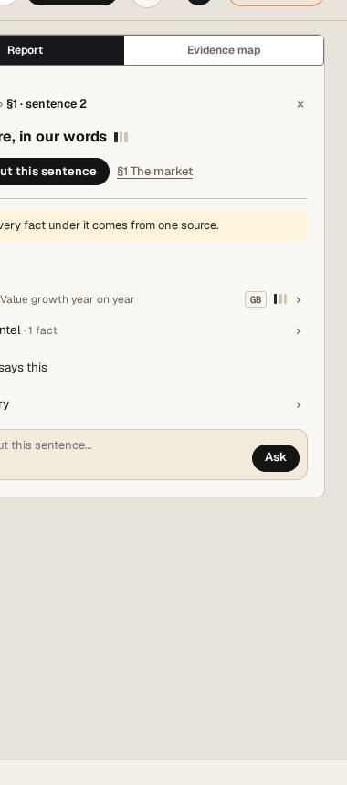
- 1Crumb
- 2State line: kind ("A figure, in our words"), bars
- 3Primary "Ask about this sentence", then the finding
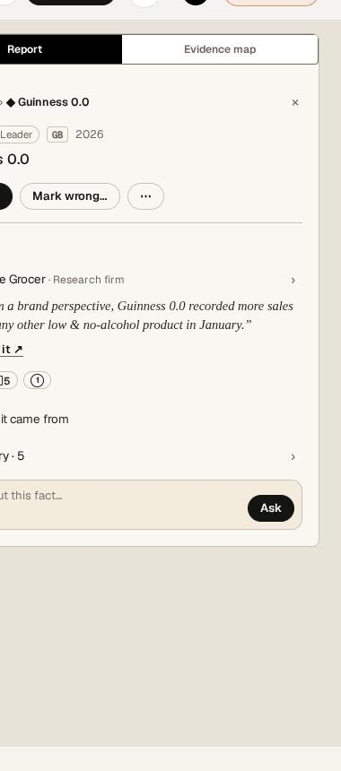
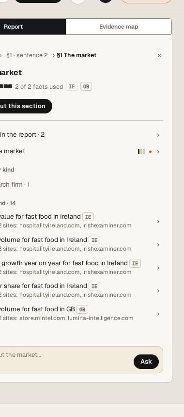
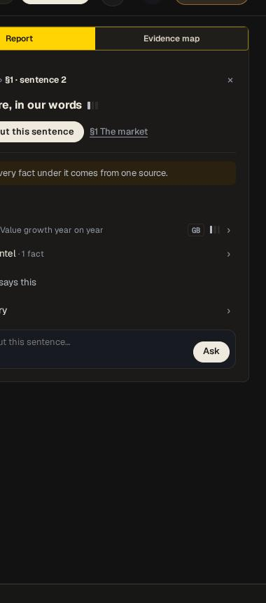
Esc, "← Report" or a click on empty paper go back. Settling the last call shows one line under any crumb: "Report is ready to lock · ← Report".
The Evidence map
The map widens the panel (ws-map). It has four columns, left to right: Sources, Facts by section, Findings, Lines. Only what the report uses is drawn, grouped (sources by publisher, facts by section), one line per box, and link width grows with the facts carried. Stubs end each column ("+27 ▤ not used", "+144 ◆ not used", "+3 ◗ left out").
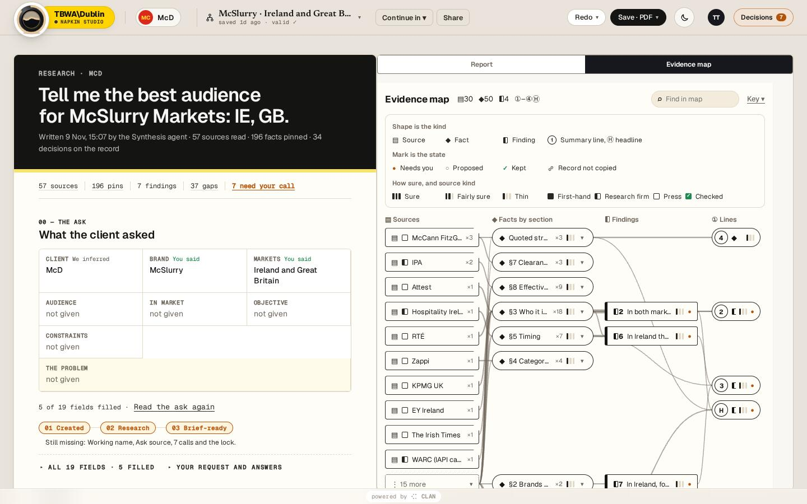
12- 1Find in map
- 2Key ▸ (open on first visit, then folded)
- 3Stubs: what is not drawn, counted
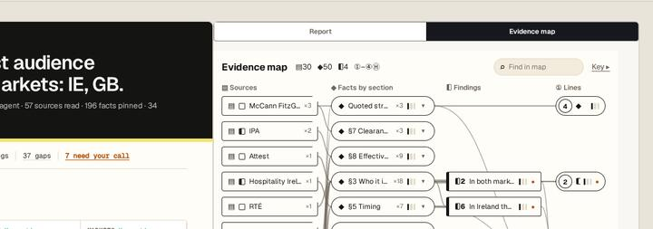
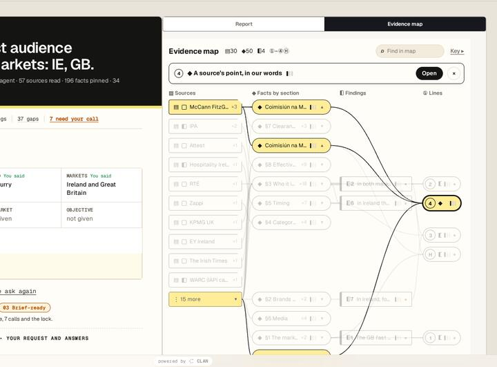
1- 1Sticky bar: the state line and Open (the one primary)
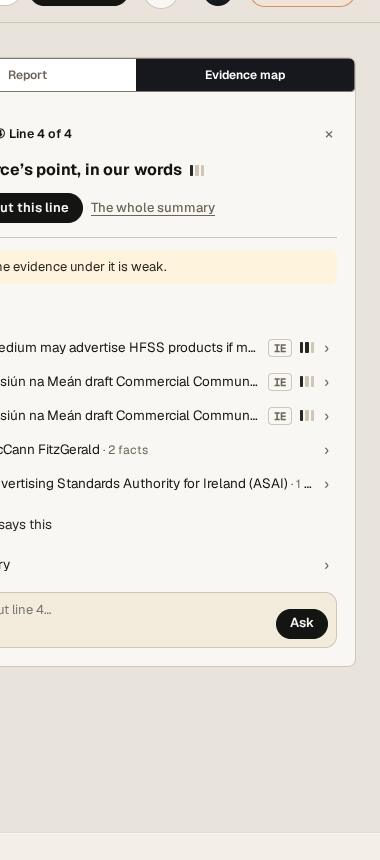
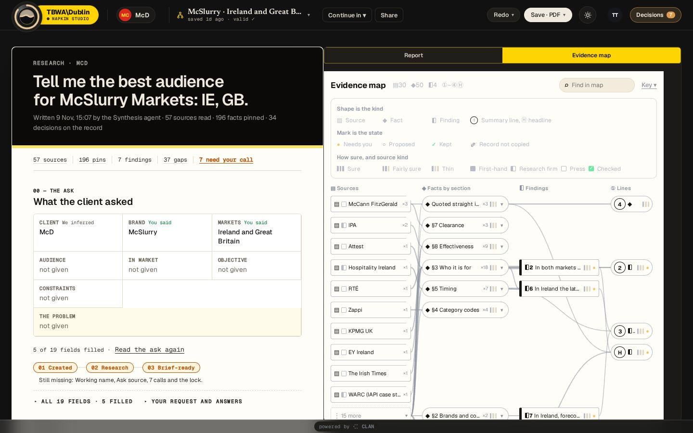
The missing source
This is the case of a fact citing a brand-library record a person confirmed in an earlier chat, where the record was never copied into the document. Once the backend carries the record (the real fix), it is a normal tile: "▤✓ <client>'s record · Checked by a person". Fallback (old documents, or a confidential record this viewer can't read): there is no box per id and no raw id anywhere. Instead there is one dashed tile per origin ("┄▤ From what Napkin knew about <client> ⛓ ×1", or "┄▤ No source saved ×n"), and the fact is drawn normally with a small ⛓. Opened, it explains in words, with no primary action. The id appears only in History's Full record.
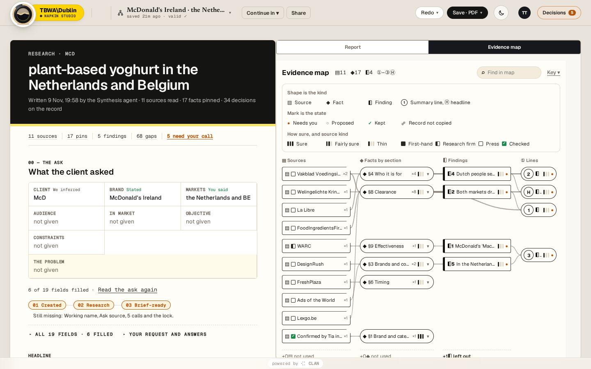
missKey() in campaign-research/index.html:6120.Confirm in the panel
A fact view's actions row is Confirm (primary while unconfirmed), then Mark wrong…, then ⋯ (Confidential, Full record). Mark wrong opens presets ("out of date", "wrong market", "misread the source") and a short reason. The page's "Before the brief" rows confirm what the client said ("You said this" / "We inferred this", then ✓ Confirm). The panel's quiet link "Check before the brief · n ›" opens them as a list view.
Phone
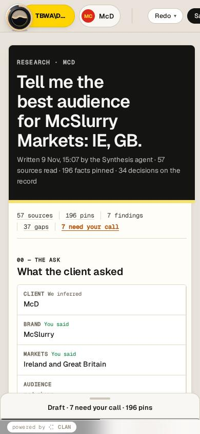